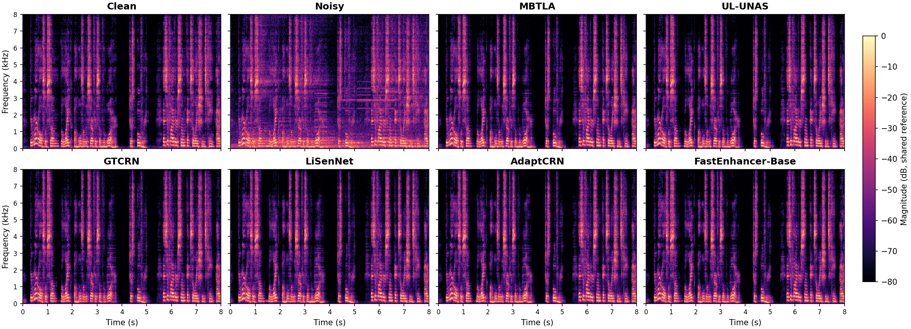
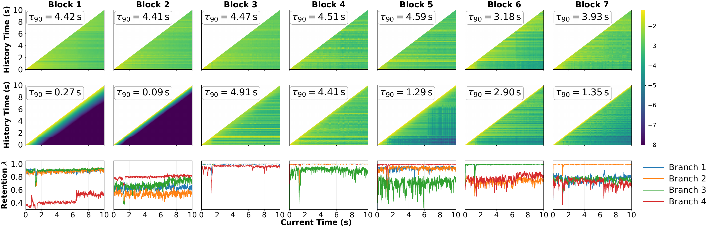
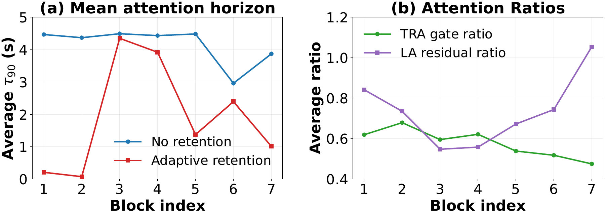

PERFORMANCE COMPARISON
Results on DNS3
Standard and larger
model configurations
Comparison on the simulated DNS3 test set. MBTLA is highlighted; bold values indicate the best result within each configuration group, including ties.
| Model | MACs/s (M) ↓ | Params (M) ↓ | RTF (%) ↓ | PESQ ↑ | ESTOI (%) ↑ | SI-SNR (dB) ↑ | DNSMOS | DNSMOS P.835 | ||
|---|---|---|---|---|---|---|---|---|---|---|
| P.808 ↑ | OVRL ↑ | SIG ↑ | BAK ↑ | |||||||
| Noisy | — | — | — | 1.41 | 66.90 | 5.61 | 2.82 | 1.63 | 2.05 | 1.86 |
| Level I · Standard configurations | ||||||||||
| GTCRN | 33.0 | 0.024 | 1.01 | 2.07 | 75.11 | 11.30 | 3.48 | 2.63 | 2.98 | 3.81 |
| LiSenNet | 55.7 | 0.037 | 0.76 | 2.17 | 76.19 | 11.96 | 3.51 | 2.67 | 3.01 | 3.85 |
| UL-UNAS | 38.2 | 0.147 | 1.80 | 2.24 | 77.67 | 12.07 | 3.55 | 2.68 | 3.01 | 3.86 |
| AdaptCRN | 40.8 | 0.135 | 1.90 | 2.29 | 77.90 | 12.29 | 3.57 | 2.72 | 3.05 | 3.87 |
| FastEnhancer-Base | 261.5 | 0.091 | 1.16 | 2.26 | 77.54 | 12.18 | 3.57 | 2.71 | 3.04 | 3.88 |
| MBTLA | 34.6 | 0.367 | 0.72 | 2.29 | 78.01 | 12.39 | 3.55 | 2.70 | 3.04 | 3.86 |
| Level II · Larger configurations | ||||||||||
| GTCRN | 102.7 | 0.077 | 1.97 | 2.24 | 77.29 | 12.08 | 3.55 | 2.68 | 3.02 | 3.86 |
| LiSenNet | 210.2 | 0.133 | 1.72 | 2.36 | 78.58 | 12.72 | 3.56 | 2.73 | 3.06 | 3.87 |
| UL-UNAS | 101.5 | 0.314 | 2.26 | 2.38 | 78.83 | 12.57 | 3.59 | 2.73 | 3.06 | 3.88 |
| AdaptCRN | 101.2 | 0.249 | 3.43 | 2.38 | 78.94 | 12.50 | 3.59 | 2.73 | 3.07 | 3.88 |
| FastEnhancer-Small | 663.9 | 0.194 | 2.21 | 2.37 | 78.86 | 12.62 | 3.62 | 2.76 | 3.09 | 3.90 |
| MBTLA | 100.1 | 1.071 | 1.75 | 2.40 | 79.25 | 12.75 | 3.59 | 2.73 | 3.06 | 3.87 |
↓ Lower is better. ↑ Higher is better. RTF is end-to-end processing time divided by input duration, reported as a percentage, on a single Intel Core i7-13700KF CPU. Results are reported in the manuscript.
Swipe across the table to see all metrics.
LISTEN & COMPARE
Audio Examples
Listen to MBTLA alongside the clean reference, noisy input, and five baseline systems. Spectrograms of the same signals are shown below.
Sample 0013
16 kHz · Mono · 8 seconds
Play any signal to compare. Only one signal plays at a time.
Spectrogram comparison
Open full size ↗
All examples are 8-second, 16 kHz mono WAV excerpts. Use headphones for comparison. Waveform heights are normalized for display; original playback levels are preserved.
INSIDE THE MEMORY
Analysis
Across blocks
and frequency branches
Explore how MBTLA retains history, gates channels, and aggregates temporal features. The original manuscript figures are followed by a closer look at all four branches over 1,000 test utterances.

Blocks 1–2 focus on local context, Blocks 3–4 retain multi-second history, and Blocks 5–7 use shorter or intermediate horizons. Smaller retention rates refresh memory faster; rates near one preserve longer context.

A CLOSER LOOK
Different branches, different memory spans
Averaging the branches can hide distinct memory patterns within a block. In Block 3, Branches 2 and 3 look back about 4.60 and 4.71 seconds, compared with 0.95 and 0.47 seconds for Branches 1 and 4. The longer-memory branches change across depth: Branch 4 stands out in Block 5, while Branch 2 does so in Block 7.
Utterance-level paired tests support an overall branch difference in every block. The separation varies: all four branches in Block 2 remain local, and some branch pairs have similar memory spans.
CHANNELS & TEMPORAL FEATURES
Channel gating and attention output
(a) Channel gating. TRA scales channels selectively. Its overall mean is about 0.65 in the first two blocks and 0.45 in Block 7. (b) Context magnitude. Attention output RMS generally increases with depth, although Block 5 shows a decrease. Memory span and output magnitude differ: Block 6, Branch 2 has a short lookback of 0.087 seconds but the largest RMS in that block, 0.711.
Samples are aligned by mixture onset, so averaging smooths utterance-specific changes. RMS describes learned feature magnitude rather than a branch’s importance to enhancement quality.